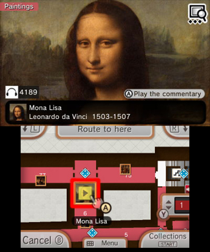
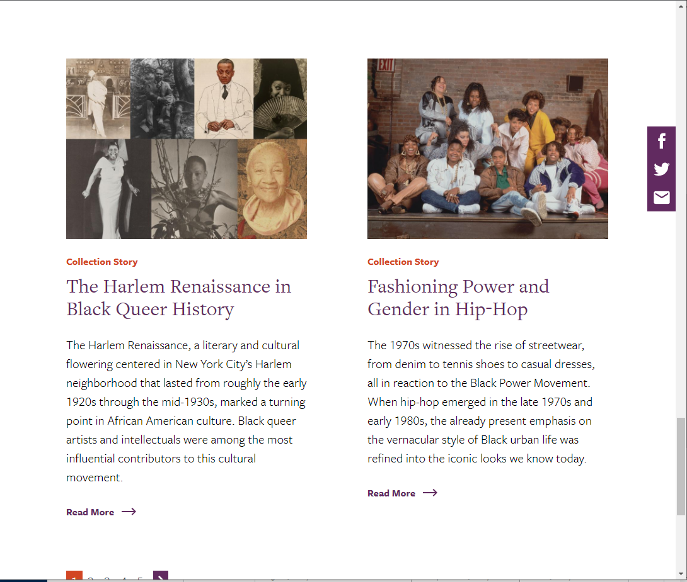

Capstone Project: Case Study
Overview
Click here to view the project briefThe project evolved over the course of the class and was scaled back to suit a more specific function, but the intent remained the same. The project was no longer a point-and-click style of interactive game, and instead was an interactive image with detailed information condensed into a single webpage for the convinience of the user. The intent is that a person would want to know more about the history and community of Davis and would use this as a means to have links to other sources, learn about the images represented on a symbol of the town's history and legacy, and do so without overloading the user with information.
UX Research
 Research for this project involved studying services and programs similar to the end goal of the project. The programs studied for the research include a digital interactive tool for a self-guided museum tour and a different museum's official website. This research helped me understand how information should be written in orer to keep the attention of the audience without providing too much information in a single instance. Having text that was too long or too in-depth would subtract from the need to include links to other sites for additional info, and would bloat the size of the elements on the page. Researching was also the first step towards the re-consideration of my approach and the development of the project into what it is now rather than the original vision.
Visual Design

The biggest inspiration for the visual design of the project was UC Davis and City of Davis' official online presence, from student resoures to advertising. When the direction of the project changed, I had the idea of making a visual design similar to one of the webpages I was using for information regarding the seal. Use of colors commonly associated with the town and the university allowed for experimentation with a specific color scheme and overall led to a visual style that I was more than content with.
User Interface
With the main interactive element of the page (and the only one) being the seal itself, a lot of thought and time needed to be put into how this interaction would work. After an image map was used to create individual interactible elements within the image, most of the back-end development was put towards the transition between different 'sub-pages' of the website. Clicking of pieces of the seal would transition to a 'sub-page' with information, a detailed image of the seal panel that was selected, and a back button. This project had very few elements of User Interface, but the few that it did have were extensive and required the majority of the development time.
Revisions
Link to the user test version of the webpage Link to the results of the user testThe core issues of the test were minute aspects of the design of the page, and required tweaks to make it more clear to the user what the intended course of action was. There isn't much to say.
Summary
This was my first instance of working on something that could potentially be used by a major institution. It required a lot of effort to develop something that I believed would be worthy of being associated with the university and the town of Davis as a whole, but most importantly I enjoyed the opportunity to use my knowledge of html programming for something significant. I am much more of a designer than a coding expert, but the opportunity to develop my skills by creating something both within my skill level while also keeping up with the standards of the project was a good challenge.